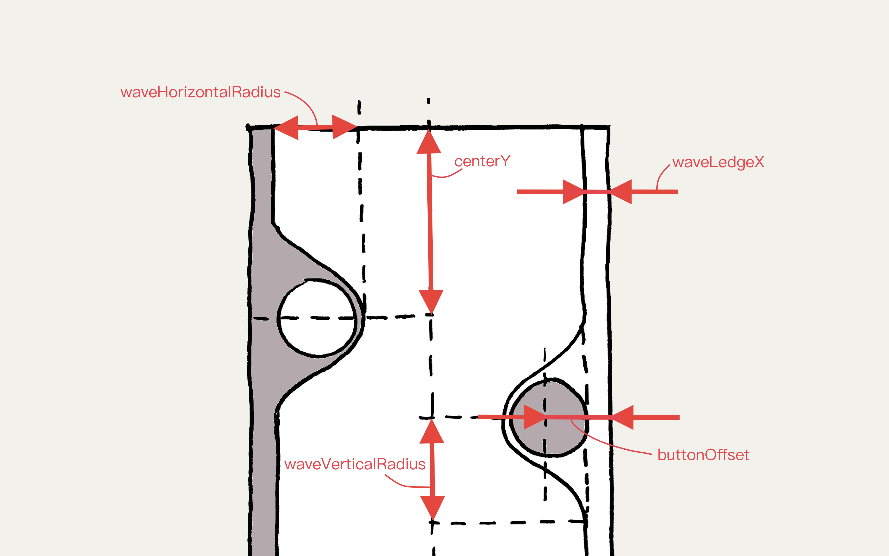

With the iOS 13 release Apple has introduced a new tool - SwiftUI, calling it “an innovative, exceptionally simple way to build user interfaces across all Apple platforms with the power of Swift”. Released on September 19th, it remains one of the hottest news in October with a number of useful and easy to follow examples and tutorials have been published alongside it. Indeed, developing and implementing simple interfaces seems intuitive and fast. What about creating something more exciting?
We are going to try implementing LiquidSwipe using SwiftUI - a slider for switching between pages with a beautiful animation that could be used for flicking through stories in iOS apps with social features or for navigation through an onboarding.

LiquidSwipeView for a SwiftUI slider
We need a new View that will represent our control:
View will display the content of the current page, as well as two sliders on both sides for changing pages:
ZStack is a simple container that displays its contents on top of each other, which makes it perfectly suited for creating overlapping elements in SwiftUI. In this tutorial, the left and right sliders are situated above the main page.
edgesIgnoringSafeArea() lets us render the contents on the whole area of the visible interface, ignoring, well, the safe area.
Slider parameters are represented with state variables, described later in the tutorial:
Noteworthy, unlike the original framework by Cuberto, we wanted to try implementing two sliders with SwiftUI. Due to this, we have to define the side of the slider we are referencing:
Content
In our simple example each page is just an empty colored rectangle:
All available page background colors are defined in an array of constants - Config.colors. In the code example below, we select the current page using the pageIndex variable:
@State variables are a very powerful SwiftUI feature, where the user interface is automatically reloaded after the variable changes. For example, in this case it means that setting pageIndex = 1 will prompt the page change and a UI update.
Silder inplementation with SwiftUI
Let’s check the slider implementation:
The first point of interest is the type of the data variable - Binding<SliderData>. In SwiftUI, it means that we not only have access to the value of the variable, but can change the value as well. Note that there is something new here, a dollar sign next to the name of the value:
We use thisfeature in the wave method, which sets the shape of the slider so the interface would have that liquid look. In other cases we retrieve the value by calling data.wrappedValue.
So far, the slider uses a ZStack and includes a wave and a button. Additionally we define two more container parameters which we shall discuss in detail:
By changing zIndex we can set the order of the elements in the ZStack. We control it using the topSlider variable:
This variable represents the slider that is currently on top. When we interact with either slider, we set this variable to show the active slider above the other.
offset lets us move the slider a bit to the right or to the left. We define the following state variable:
The slider does not have an offset most of the time. However, during the page change animation we hide the new sliders by setting sliderOffset = 100, and then revert this value to display the sliders. Apple made it quite simple to create this animation using SwiftUI:
By default, iOS uses linear animation. However we can customize it using withAnimation parameters:
Button
The button consists of a gray circle and a white arrow that is backed up by simple math:
During the definition of the ZStack contents the center of the button is situated in the (0, 0) point. After that we use the offset method to move the button to the desired point (which is calculated using SliderData - it will be described a bit later). By doing this, we automatically set the transparency of the button - the further we move the slider, the more transparent it gets.
Wave
We use a separate object for presenting the wave - WaveView. It is created (and set up with the background and gestures) in the wave method:
The index function returns the index of the next (or previous) page - depending on the side of the slider. It also handles switching between the first and the last page:
Now we need to define 3 gestures: Getting hold of the slider and switching the page, during which the wave is updated. Letting go of the wave, where we have to either change the page, or return the wave to the original position. Tapping the wave, resulting in an instant page switch.
All gestures are combined into one, that can be used for setting up WaveView:
Here are the gestures at a closer look.
1. Drag gesture
During the page switch, first thing we do is persist the side of the wave, to render it on top:
Then, we calculate the new state of the wave using the current state and the movement values:
The state calculation is rather straightforward and will be presented after describing SliderData contents.
2. Drop gesture in SwiftUI
This is a slightly more complicated gesture:
First we check if the slider is far enough to trigger a page change. Otherwise it should be returned to the original position by calling the already familiar withAnimation method:
A separate function is responsible for initiating a page switch:
In the beginning we animate the wave to the final position. Then, after a short delay, we change the page, return the wave to the original state, and animate the new sliders by changing the sliderOffset variable.
3. Tap gesture
Tapping a wave combines two actions described above. First we save the wave that should be drawn on top:
Then the page switch is initiated.
SliderData
3 key parameters comprise slider data: the side of the slider, the vertical coordinate of the wave center, and the progress of the page switch (ranges from 0 to 1).
All other parameters are calculated dynamically from the key parameters:
Now, what all these parameters are used for? Initially we create data for each slider with zero progress and a different center for the right and left waves.
After the swipe we set the wave to the initial or final state. In this case the center of the wave doesn’t change, and the progress is set to the either end of the range:
Dragging the wave isn’t much more complicated:
The progress is linearly dependant on the wave’s horizontal position, and the wave center is equal to the tapping point.
The method used to decide if the page should be changed is also rather simple:
We simply compare the current progress with an arbitrary constant (0.15 in this case), and revert the wave to the original position if the threshold is not met.
WaveView
The last object we need to implement is the WaveView. Here’s how we do it:
It is a Shape that uses the same 3 parameters as SliderData. The only difference is that the center of the wave and the progress can change. It is necessary so that SwiftUI can automatically animate the wave with access to only the beginning and final states.
To make this possible we define in SwiftUI animatableData variable:
We use this variable to represent the state of the wave as 2 floating point numbers and describe how to get and set them. This is enough to automatically animate the wave, because SwiftUI can animate floating point numbers from the box.
Finally, the path function defines the shape of the wave.
This method is verbose and mathematically complex, so we won’t include the code in the tutorial. You can check out the full implementation on the GitHub.
Conclusion
As you can see, SwiftUI is great not only for simple UI creation. Complex controls and effects can also be efficiently and succinctly described by this new tool, which this tutorial hopefully demonstrated. We have no doubt that SwiftUI will become a new standard for declarative interface creation on Apple platforms, so any Apple developer might want to consider familiarising themselves with it. Don't forget to check out another one of our SwiftUI tutorials and best of luck!
If you'd like to work with us, drop us a line here.
UPD: a fellow redditor managed to run it on Apple Watch too. We only tested it on phones but do not let it stop you from trying.
Read similar articles

SwiftUI Tutorial: Replicating the Apple Card Application
This article is the second one in the Replicating series where we recreate UI elements of high-quality apps. Here we take a look at Apple Card app.
Learn more 3 min read
SwiftUI Tutorial: Replicating the Activity Application
This article is the third one in the Replicating series where we recreate UI elements of high-quality apps. Here we take a look at Apple’s Activity app.
Learn more 4 min readCreating Haptic Feedback in iOS 13 With Core Haptics
With iOS 13 release Apple finally added a new framework called Core Haptics, which allows developers to define and play custom haptic feedback patterns.
Learn more 4 min read